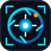
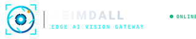

工业级边缘机器视觉全息守望者
守护之神 Heimdall 的警惕守望与现代机器视觉镜头光圈（Aperture）融为一体。四周由 AI 目标检测边框（BBox Corner Brackets） 锚定，内部由 6 片精密快门刀片 与 十字对焦准星 聚焦核心天眼。
方案 A 视觉语言体系
目标检测边界框角标 (BBox Brackets) AI 属性
四个角落的 [ ] L 型边角标记，直观传达计算机视觉目标检测（Object Detection）的工业认知。
6 片几何光圈叶片 (Aperture Iris)
顺时针交错旋转的 6 片机械刀片，象征视频镜头进光量控制、多码流（主码流/子码流）接入与聚焦分析。
十字瞄准准星与告警锚点 (Crosshair & Alert)
中心超聚能白核贯穿准星刻度，右上角点缀一颗琥珀金警报指示灯，代表精准捕获越界与区域入侵瞬间。
方案 A Favicon 极限微尺度真实拟真
验证在 16px 浏览器标签页中的极端锐度与高反差表现

系统控制台导航栏实景 (Navbar Simulation)
方案 A 横版 Logo (Icon + Wordmark) 在深色控制台顶栏中的视觉表现

[控制台视口: 方案 A 的硬朗工业感与安防视频监控、深色卡片以及动态 SVG 布防规则完美契合]
多重质感与硬件机箱丝印测试
方案 A 在暗色监控大屏、浅色审计报表打印、以及铝合金工控机外壳激光雕刻的表现
默认暗黑工业控制台，光圈锐利聚焦，安防专业气质拉满。
适用于导出的安全告警证据 PDF 报告、正式文书与白底文档。
方案 A 的纯几何线条在激光雕刻机上具有极佳的可加工性，工业质感拔群。